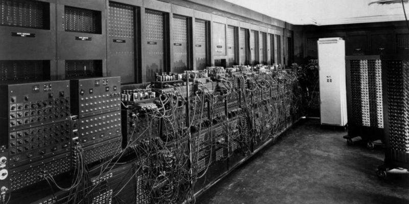

¿Cual es la historia de los Pc?
Lejos de ser un invento de una persona en particular, la computadora es el resultado evolutivo de ideas de muchas personas relacionadas con áreas tales como la electrónica, la mecánica, los materiales semiconductores, la lógica, el álgebra y la programación. Fue creada por un bien mayor debido a que la elaboración de las tablas matemáticas era un proceso tedioso y muy propenso a errores Konrad Zuse fue el primero en construir una computadora que funcionase. Lo hizo en el salón de la casa de sus padres en Berlín. Este ordenador podía guardar 64 palabras. Con el paso del tiempo se llegó a mejorar más que ahora. Guarda 500 millones de palabras con una capacidad de 30 GB.
Anderson Steven Mosquera Ariza

Los principales hitos en la historia de la computación, desde las primeras herramientas manuales para hacer cálculos hasta las modernas computadoras de bolsillo.
500 a. C.: se utiliza el ábaco en antiguas civilizaciones como la china o la sumeria, la primera herramienta para realizar sumas y restas. Hacia 830: el matemático e ingeniero persa Musa al-Juarismi desarrolló la teoría del algoritmo, es decir, la resolución metódica de problemas de álgebra y cálculo numérico mediante una lista bien definida, ordenada y finita de operaciones. 1614: el escocés John Napier inventa el logaritmo neperiano, que consiguió simplificar el cálculo de multiplicaciones y divisiones reduciéndolo a un cálculo con sumas y restas. 1620: el inglés Edmund Gunter inventa la regla de cálculo, instrumento manual utilizado desde entonces hasta la aparición de la calculadora electrónica para hacer operaciones aritméticas. 1623: el alemán Wilhelm Schickard inventa la primera máquina de calcular, cuyo prototipo desapareció poco después.  1642: el científico y filósofo francés Blaise Pascal inventa una máquina de sumar (la pascalina), que utilizaba ruedas dentadas, y de la que todavía se conservan algunos ejemplares originales. 1671: el filósofo y matemático alemán Gottfried Wilhelm Leibniz inventa una máquina capaz de multiplicar y dividir. 1801: el francés Joseph Jacquard inventa para su máquina de tejer brocados una tarjeta perforada que controla el patrón de funcionamiento de la máquina, una idea que sería empleada más adelante por los primeros computadores. 1833: el matemático e inventor británico Charles Babbage diseña e intenta construir la primera computadora, de funcionamiento mecánico, a la que llamó la «máquina analítica». Sin embargo, la tecnología de su época no estaba lo suficientemente avanzada para hacer realidad su idea. 1841 : la matemática Ada Lovelace comienza a trabajar junto a Babbage en lo que sería el primer algoritmo destinado a ser procesado por una máquina, por lo que se la considera como la primera programadora de computadores. 1890: el norteamericano Herman Hollerith inventa una máquina tabuladora aprovechando algunas de las ideas de Babbage, que se utilizó para elaborar el censo de Estados Unidos. Hollerith fundó posteriormente la compañía que después se convertiría en IBM. 1893: el científico suizo Otto Steiger desarrolla la primera calculadora automática que se fabricó y empleó a escala industrial, conocida como la Millonaria. 1936: el matemático y computólogo inglés Alan Turing formaliza los conceptos de algoritmo y de máquina de Turing, que serían claves en el desarrollo de la computación moderna. 1938: el ingeniero alemán Konrad Zuse completa la Z1, la primera computadora que se puede considerar como tal. De funcionamiento electromecánico y utilizando relés, era programable (mediante cinta perforada) y usaba sistema binario y lógica boleana. A ella le seguirían los modelos mejorados Z2, Z3 y Z4. 1944: en Estados Unidos la empresa IBM construye la computadora electromecánica Harvard Mark I, diseñada por un equipo encabezado por Howard H. Aiken. Fue la primera computadora creada en Estados Unidos. 1944: en Inglaterra se construyen los computadores Colossus (Colossus Mark I y Colossus Mark 2), con el objetivo de descifrar las comunicaciones de los alemanes durante la Segunda Guerra Mundial. 1946: en la Universidad de Pensilvania se pone en funcionamiento la ENIAC (Electronic Numerical Integrator And Calculator), que funcionaba a válvulas y fue la primera computadora electrónica de propósito general. 1947: en los Laboratorios Bell, John Bardeen, Walter Houser Brattain y William Shockley inventan el transistor. 1950: Kathleen Booth, crea el Lenguaje Ensamblador para hacer operaciones en la computadora sin necesidad de cambiar los cables de conexión, sino a través de tarjetas perforadoras (programa u operación guardada para usarla cuando sea necesario) las cuales eran propensas a dañarse por esta razón, a finales de este año se comienza a desarrollar el lenguaje de programación. 1951: comienza a operar la EDVAC, concebida por John von Neumann, que a diferencia de la ENIAC no era decimal, sino binaria, y tuvo el primer programa diseñado para ser almacenado.
1953: IBM fabrica su primera computadora a escala industrial, la IBM 650. Se amplía el uso del lenguaje ensamblador para la programación de las computadoras. Las computadoras con transistores reemplazan a las de válvulas, marcando el comienzo de la segunda generación de computadoras.
1957: Jack S. Kilby construye el primer circuito integrado.
1964: la aparición del IBM 360 marca el comienzo de la tercera generación de computadoras, en la que las placas de circuito impreso con múltiples componentes elementales pasan a ser reemplazadas con placas de circuitos integrados.
1965: Olivetti lanza, Programma 101, la primera computadora de escritorio.
1971: Nicolet Instruments Corp. lanza al mercado la Nicolet 1080, una computadora de uso científico basada en registros de 20 bits.
1971: Intel presenta el primer microprocesador comercial, el primer chip: el microprocesador Intel 4004.
1975: Bill Gates y Paul Allen fundan Microsoft.
1976: Steve Jobs, Steve Wozniak, Mike Markkula fundan Apple.
1977: Apple presenta el primer computador personal que se vende a gran escala, el Apple II, desarrollado por Steve Jobs y Steve Wozniak.
1981: se lanza al mercado el IBM PC, que se convertiría en un éxito comercial, marcaría una revolución en el campo de la computación personal y definiría nuevos estándares.
1982: Microsoft presenta su sistema operativo MS-DOS, por encargo de IBM.
1983: ARPANET se separa de la red militar que la originó, pasando a un uso civil y convirtiéndose así en el origen de Internet.
1983: Richard Stallman anuncia públicamente el proyecto GNU.
1985: Microsoft presenta el sistema operativo Windows 1.0.
1951: comienza a operar la EDVAC, concebida por John von Neumann, que a diferencia de la ENIAC no era decimal, sino binaria, y tuvo el primer programa diseñado para ser almacenado.
1953: IBM fabrica su primera computadora a escala industrial, la IBM 650. Se amplía el uso del lenguaje ensamblador para la programación de las computadoras. Las computadoras con transistores reemplazan a las de válvulas, marcando el comienzo de la segunda generación de computadoras.
1957: Jack S. Kilby construye el primer circuito integrado.
1964: la aparición del IBM 360 marca el comienzo de la tercera generación de computadoras, en la que las placas de circuito impreso con múltiples componentes elementales pasan a ser reemplazadas con placas de circuitos integrados.
1965: Olivetti lanza, Programma 101, la primera computadora de escritorio.
1971: Nicolet Instruments Corp. lanza al mercado la Nicolet 1080, una computadora de uso científico basada en registros de 20 bits.
1971: Intel presenta el primer microprocesador comercial, el primer chip: el microprocesador Intel 4004.
1975: Bill Gates y Paul Allen fundan Microsoft.
1976: Steve Jobs, Steve Wozniak, Mike Markkula fundan Apple.
1977: Apple presenta el primer computador personal que se vende a gran escala, el Apple II, desarrollado por Steve Jobs y Steve Wozniak.
1981: se lanza al mercado el IBM PC, que se convertiría en un éxito comercial, marcaría una revolución en el campo de la computación personal y definiría nuevos estándares.
1982: Microsoft presenta su sistema operativo MS-DOS, por encargo de IBM.
1983: ARPANET se separa de la red militar que la originó, pasando a un uso civil y convirtiéndose así en el origen de Internet.
1983: Richard Stallman anuncia públicamente el proyecto GNU.
1985: Microsoft presenta el sistema operativo Windows 1.0.
 1990: Tim Berners-Lee idea el hipertexto para crear el World Wide Web (www), una nueva manera de interactuar con Internet.
1991: Linus Torvalds comenzó a desarrollar Linux, un sistema operativo compatible con Unix.
2000: aparecen a comienzos del siglo XXI los computadores de bolsillo, primeras PDA.
2007: presentación del primer iPhone, por la empresa Apple, un teléfono inteligente o smartphone.
2016ː eclosión de la realidad virtual dirigida al gran público con dispositivos de fabricantes como Oculus, HTC y Sony.
1990: Tim Berners-Lee idea el hipertexto para crear el World Wide Web (www), una nueva manera de interactuar con Internet.
1991: Linus Torvalds comenzó a desarrollar Linux, un sistema operativo compatible con Unix.
2000: aparecen a comienzos del siglo XXI los computadores de bolsillo, primeras PDA.
2007: presentación del primer iPhone, por la empresa Apple, un teléfono inteligente o smartphone.
2016ː eclosión de la realidad virtual dirigida al gran público con dispositivos de fabricantes como Oculus, HTC y Sony.
Trabajo Presentado por: Anderson Steven Mosquera Ariza